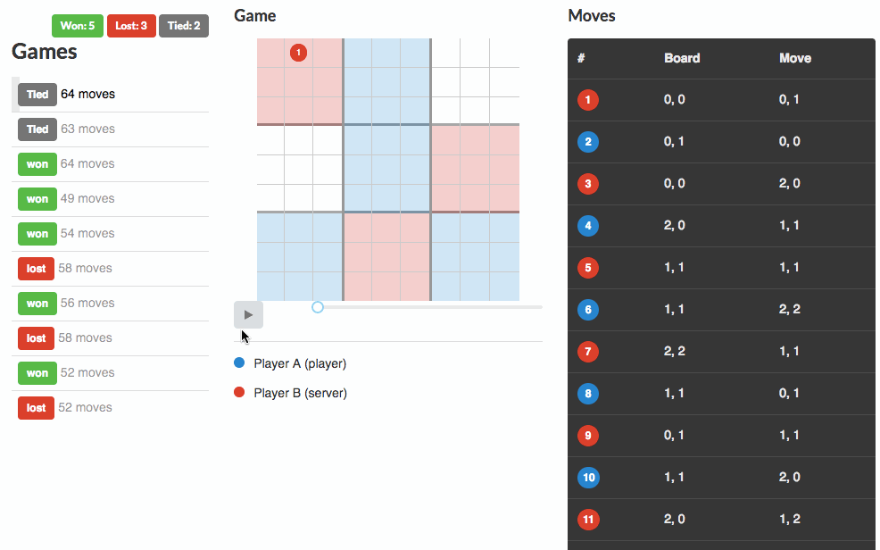

Iterating Locally
If you haven't installed the client utility
uabcplease go through the "Before You Arrive" section.
UABC Options
The uabc utility which you use to play games comes with some handy options.
-pputs the client in practice mode--logenables logging to a file--verboseenables logging to the console-fdefines the path to your executable player (for scripting languages like JavaScript or Python you may have to addnodeandpythonto the path, as seen in the example)
For an explanation of all the options run uabc -h.
ProTip! Analyse Your Games
Logging to a file is very useful because you can then upload your log file to see the games and analyze the moves one by one.
For example, you can run uabc -p --log --verbose -f "python3 run_player.py", and use your logfile to see:

Seriously, this is going to be very useful, try it!